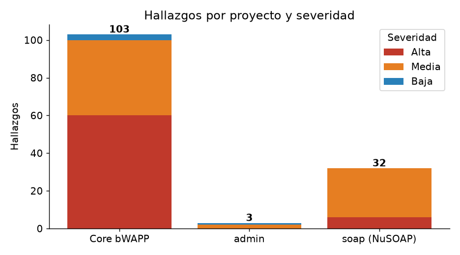
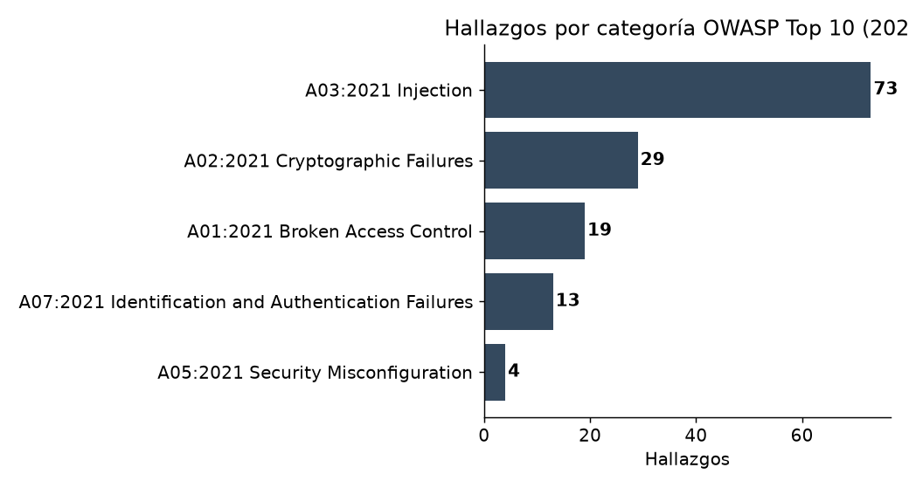
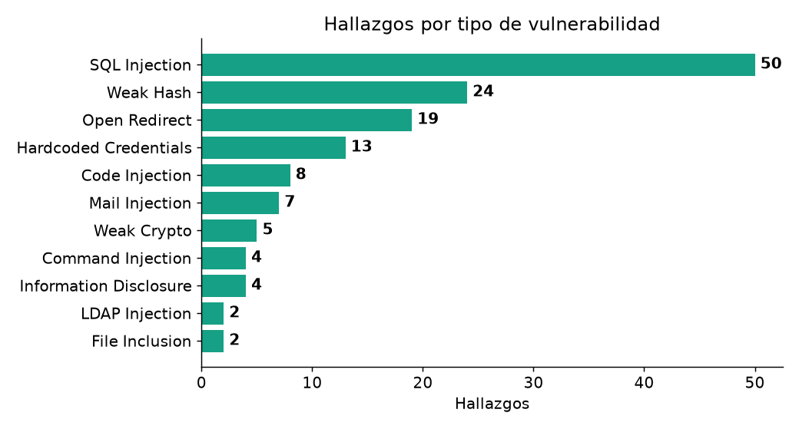
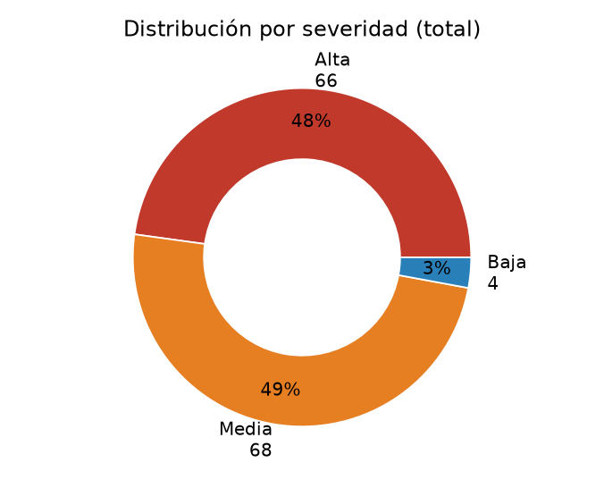
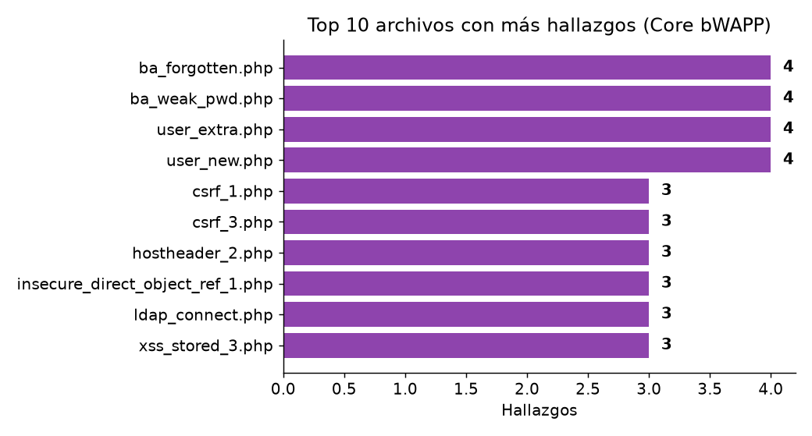

Evaluación por Proyecto y Semáforo de Riesgo
Justificación: SQLi masiva en endpoints críticos, RCE mediante eval() y shell_exec(), Inclusión de archivos y XSS. Bloqueo inmediato para producción.
Justificación: Algoritmos de cifrado y hashing obsoletos (MD5/DES) y riesgo de componentes de terceros sin mantenimiento. Requiere triaje de falsos positivos en base64.
Justificación: Credenciales embebidas por defecto (password="bug") y fuga de configuración del servidor mediante llamada a phpinfo().
Lectura Ejecutiva y Prioridades de Remediación
La evaluación SAST demuestra que la aplicación presenta un nivel de vulnerabilidad inaceptable para un entorno corporativo. Con 73 fallos de inyección (A03:2021) y un 48% de severidad alta, un atacante puede comprometer la base de datos y obtener ejecución remota de comandos en el servidor.
bind_param().
eval() y sustituir shell_exec() por lógica nativa en PHP y validación de lista blanca.
htmlspecialchars($var, ENT_QUOTES, 'UTF-8') en toda salida reflejada y sanear cabeceras HTTP.
password_hash(..., PASSWORD_ARGON2ID) y extraer contraseñas a variables de entorno.
01. Hallazgos por Proyecto y Severidad

El núcleo (Core) concentra 103 de los 138 hallazgos. Soap aporta principalmente hallazgos criptográficos.
02. Distribución OWASP Top 10 (2021)

Dominancia absoluta de A03: Injection (73), seguida de Fallos Criptográficos (29) y Control de Acceso (19).
03. Hallazgos por Tipo de Vulnerabilidad

La Inyección SQL representa el vector individual más frecuente (50 hallazgos), seguido por hashing débil (24).
04. Proporción por Severidad (Total)

48% de severidad Alta (66) y 49% Media (68). Solo un 3% corresponde a hallazgos informativos/bajos.
05. Top 10 Archivos con Mayor Deuda de Seguridad (Core bWAPP)

Priorización directa para refactorización: ba_forgotten.php, ba_weak_pwd.php, user_extra.php y user_new.php encabezan la lista de intervención.
| ID | Severidad | Proyecto | Archivo : Línea | Regla / Categoría | OWASP / CWE | Detalle & Mensaje |
|---|
T5 — Análisis Profundo de 5 Vulnerabilidades y Código Remediado
1. SQL Injection — sqli_1.php
Vector de Ataque: La variable $_GET["title"] se concatena directamente en la cadena SQL. La función sqli() no implementa saneamiento en nivel de seguridad "low", permitiendo extracción de tablas mediante UNION SELECT o bypass de autenticación.
$title = $_GET["title"];
$sql = "SELECT * FROM movies WHERE title LIKE '%" . sqli($title) . "%'";
$recordset = mysql_query($sql, $link);$title = $_GET["title"] ?? "";
$stmt = $mysqli->prepare("SELECT * FROM movies WHERE title LIKE ?");
$like_title = "%" . $title . "%";
$stmt->bind_param("s", $like_title);
$stmt->execute();
$recordset = $stmt->get_result();2. OS Command Injection — commandi.php
Vector de Ataque: Entrada proveniente de $_POST["target"] se pasa sin delimitar al intérprete del sistema operativo mediante shell_exec(). Un atacante puede encadenar comandos usando metacaracteres (; id, | whoami).
$target = $_POST["target"];
echo "<p>" . shell_exec("nslookup " . commandi($target)) . "</p>";$target = trim($_POST["target"] ?? "");
if (!filter_var($target, FILTER_VALIDATE_DOMAIN, FILTER_FLAG_HOSTNAME) &&
!filter_var($target, FILTER_VALIDATE_IP)) {
die("Destino no válido");
}
$safe_target = escapeshellarg($target);
echo "<p>" . htmlspecialchars(shell_exec("nslookup " . $safe_target)) . "</p>";3. Dynamic Code Execution (RCE) — php_eval.php
Vector de Ataque: El parámetro $_REQUEST["eval"] se pasa directamente a la función eval(), lo que otorga Ejecución Remota de Código (RCE) completa e inmediata al atacante en el contexto del servidor web.
@eval($_REQUEST["eval"]);// No existe uso seguro para eval() con datos provistos por clientes.
$action = $_REQUEST["action"] ?? "default";
$allowed_actions = ["calcular" => "func_calc", "mostrar" => "func_show"];
if (array_key_exists($action, $allowed_actions)) {
call_user_func($allowed_actions[$action]);
}4. Reflected Cross-Site Scripting (XSS) — xss_get.php
Vector de Ataque: El valor de $_GET["firstname"] se concatena directamente en la respuesta HTML sin codificar caracteres especiales (<, >, ", '), permitiendo inyección de scripts JavaScript en el navegador de la víctima.
$firstname = $_GET["firstname"];
echo "Welcome " . xss($firstname) . " " . xss($lastname);$firstname = $_GET["firstname"] ?? "";
$lastname = $_GET["lastname"] ?? "";
echo "Welcome " . htmlspecialchars($firstname, ENT_QUOTES | ENT_HTML5, 'UTF-8') . " " .
htmlspecialchars($lastname, ENT_QUOTES | ENT_HTML5, 'UTF-8');5. Local / Remote File Inclusion (LFI/RFI) — directory_traversal_1.php
Vector de Ataque: El archivo a incluir proviene de un parámetro externo sin validación de secuencia de escape de directorios (../../etc/passwd o URLs remotas).
$file = $_GET["page"];
include($file);$file = basename($_GET["page"] ?? "home.php");
$allowed_pages = ["home.php", "about.php", "contact.php"];
if (!in_array($file, $allowed_pages, true)) {
http_response_code(400);
die("Página no permitida");
}
include(__DIR__ . "/pages/" . $file);Falso Positivo en Regla Criptográfica: base64_encode()
En la evaluación SAST sobre la librería soap (NuSOAP), la regla de criptografía php-weak-crypto-mcrypt marca 5 coincidencias sobre el uso de base64_encode() y base64_decode(), catalogándolos con severidad media o alta.
Justificación Técnica del Falso Positivo
- Base64 no es un algoritmo criptográfico: Es un esquema de codificación de contenido binario a texto ASCII (RFC 4648).
- Propósito en SOAP/XML: XML solo admite caracteres imprimibles. NuSOAP usa Base64 para transportar adjuntos y binarios de forma transparente en HTTP.
- No provee confidencialidad por diseño: Clasificarlo como "cifrado roto o débil" es conceptualmente erróneo en el contexto de transmisión de datos.
Ajuste Propuesto al Ruleset YAML
Añadir cláusulas pattern-not para excluir funciones de codificación de transporte o separar en una regla informativa:
rules:
- id: php-weak-crypto-mcrypt
pattern-not: base64_encode(...)
pattern-not: base64_decode(...)
pattern-sinks:
- pattern: mcrypt_encrypt(...)
- pattern: des_encrypt(...)